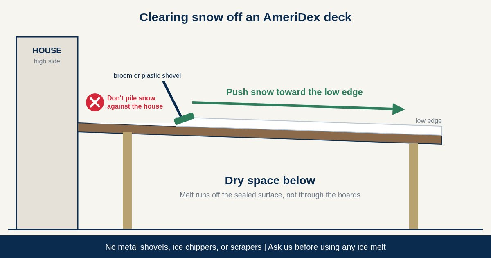

On a conventional gapped deck, melting snow drips through the gaps all winter onto the framing and whatever sits below. On an AmeriDex deck, the boards lock onto the Dexerdry seal, so melt stays on top and runs off the surface toward the low edge, the same way rain does. The space below stays dry. Clearing snow is about keeping the deck usable and the drainage path open, and doing it without scratching the boards.
Use a broom for light snow and a plastic shovel for deeper snow. Push it along the boards toward the low edge, away from the house. Keep metal shovels and scrapers off the deck, and call us before using any ice melt.
Four steps to clear snow the right way
Sweep while it is light
Fresh, light snow comes off fast with a soft broom. Clearing a few inches at a time is easier on you and the boards than waiting for a deep, packed layer.
Push, don't chop
For deeper snow, use a plastic shovel and push it along the length of the boards. Skip the chopping and scraping. Leaving a thin layer for the sun to finish is better than digging at the surface.
Send it off the low edge
Your deck is pitched away from the house, so push snow toward the outside edge and off the deck. Don't pile it against the house wall, where it sits on the high side as it melts.
Keep the drainage path open
Clear the low edge so melt can drip off, and keep any gutter and downspout on the deck free of packed snow and ice. If your boards run away from the house, that gutter is at the house, so don't bank snow on it.
What to use and what to skip
| Tool | OK on AmeriDex? | Why |
|---|---|---|
| Soft broom | Yes | Best for light, fresh snow. Sweep along the boards. |
| Plastic shovel | Yes, gently | Push along the boards. Do not chop or scrape down to the surface. |
| Metal shovel | No | Listed as abuse in the AmeriDex Limited Warranty. |
| Metal ice chipper or scraper | No | Same reason. Let the sun soften ice instead. |
| Pressure washer | No | Power washing is off the list for AmeriDex care in any season. |
| Ice melt or rock salt | Ask us first | Chemicals not recommended by the manufacturer are not covered. |
Do
- Sweep light snow early
- Use a plastic shovel for deep snow
- Push snow off the low edge
- Keep gutters and downspouts clear
Don't
- Use a metal shovel or ice chipper
- Pile snow against the house
- Pressure wash ice away
- Use ice melt without asking us first
What about ice?
Ice is where most deck damage happens, because the urge is to chip at it. Don't. A metal chipper or scraper is on the warranty's list of abuse, and a hard chop can mark the boards. Sweep away slush so it does not refreeze, and let sunlight soften what is left. If you want to use an ice melt product, contact us first, since damage from chemicals not recommended by the manufacturer is not covered. You can read the full terms in the AmeriDex Limited Warranty.
The weight of the snow is carried by the joists, beams, and posts, which your builder sizes to local code. If a big storm leaves a deep, heavy load, clear it down with a broom and plastic shovel, and have your builder check the framing if anything looks off.
How PVC boards handle the cold
Cellular PVC has no wood fiber, so it does not soak up water, and freeze and thaw cycles have nothing to swell or split. The boards do move a little along their length as temperatures change, about 1/8 inch over a 20 foot board, and that is normal. Learn more about the material in our guide to PVC vs composite decking.
If your deck is going in now, install the color matched screw plugs as soon as you can, before rain, snow, or debris gets into the screw holes. The Dexerdry install help page covers the details.
Frequently asked questions
Can I shovel snow off a PVC deck?
Yes, with a broom or a plastic shovel used gently. Push the snow along the boards toward the low edge instead of chopping or scraping. Keep metal shovels and metal scrapers off the deck, since the AmeriDex Limited Warranty lists shoveling or scraping with a metal shovel or other metal object as abuse that voids coverage.
Can I use ice melt or rock salt on an AmeriDex deck?
Call us before you put any ice melt on the deck. The warranty does not cover damage from chemicals not recommended by the manufacturer, so get the go ahead first. Sunlight and a broom for the slush handle most thin ice.
Do I have to clear snow off my deck?
For drainage, no. As snow melts, the water runs off the sealed surface toward the low edge, so the space below stays dry. Clear it to keep the deck usable and the drainage path open, and if heavy snow piles up, have your builder look at the framing.
Will freezing weather crack PVC deck boards?
Cellular PVC has no wood fiber to soak up water, so freeze and thaw cycles have nothing to swell or split. The boards do move a little along their length as temperatures change, about 1/8 inch over a 20 foot board, and that is normal.
Getting the deck ready for winter?
Run through our fall deck maintenance checklist before the snow sticks, and see how to clean PVC deck boards once spring comes. Planning a new deck? Read how much slope a deck needs to drain, how to keep the space under a deck dry, request free samples, or start a free quote.